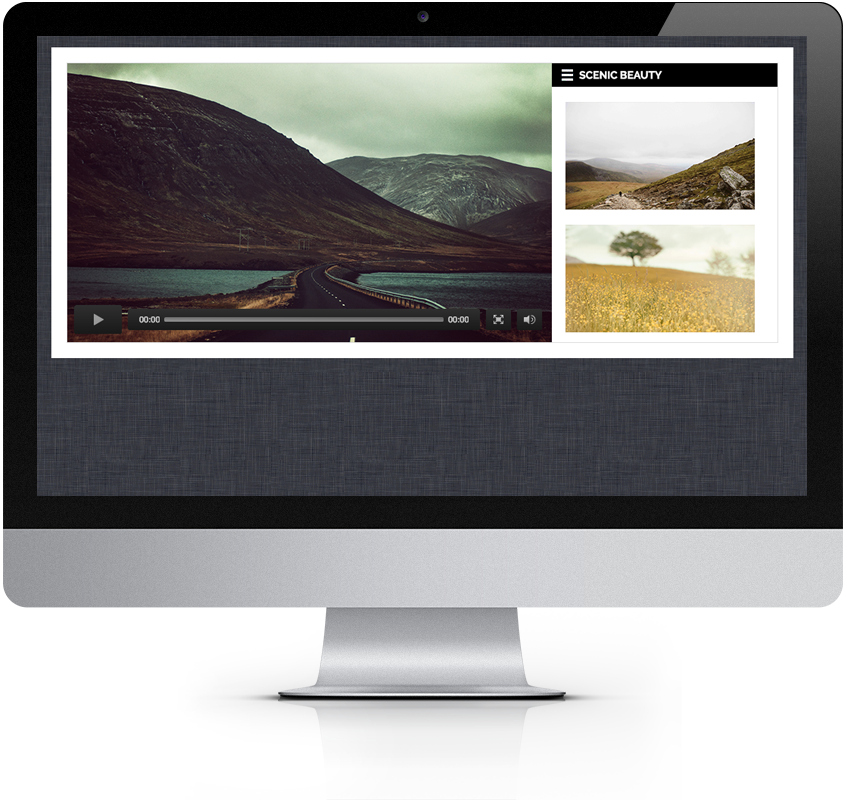
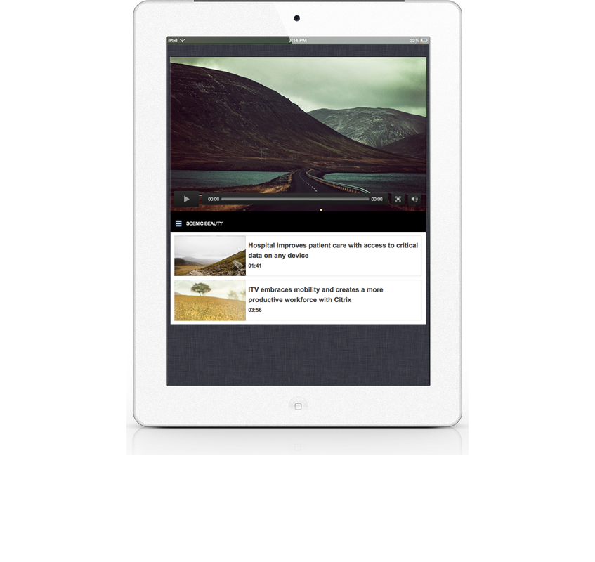
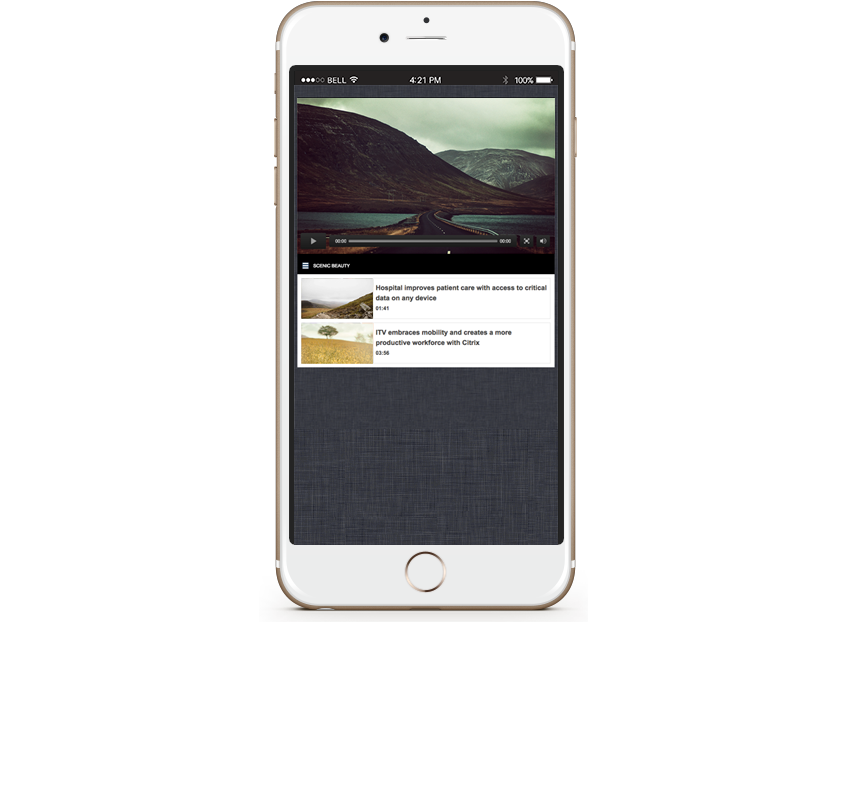

<!--Work Preview section-->
<section class="offset section">
			
	<!--Inner content-->
	<div class="innerContent">

		<!--Container-->
		<div class="container clearfix">
			<div class="sixteen columns">
				<div class="work-preview-close"></div>
			</div>
		</div>
		<!--Container-->
		
		<!--Container-->
		<div class="container clearfix">

			<div class="nine columns">

				<!--slider-->
				<div class="work-preview-slider clearfix flexslider" >

					<div>

						<ul class="slides">
							
							<li>
								
							</li>
							
							<li>
								
							</li>

							<li>
								
							</li>

						</ul>

					</div>
					
				</div>
				<!--slider-->

			</div>


			<div class="seven columns info">
				<h1 class="title">Web Component Development<br><span>Responsive</span></h1>
				<p>This is a dynamic video player that pulls in data via the Brightcove API. All videos and assets are managed through the BC dashboard and injected into the component. The layout of the component has been designed responsively to display properly on all viewports and devices.</p>

				<!-- <div class="social-icons">
					<ul>
						<li><i class="step fi-heart"></i><span>100</span></li>
						<li><i class="step fi-social-facebook"></i><span>620</span></li>
						<li><i class="step fi-social-twitter"></i><span>450</span></li>
						<li><i class="step fi-social-pinterest"></i><span>100</span></li>
					</ul>
				</div> -->

			</div>


		</div>
		<!--Container-->
	
	</div>
	<!--Inner content-->

	
</section>